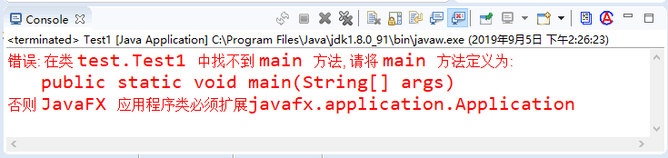

首页 > Java教程 > Java入门基础及环境搭建
Java初学者容易犯的错误
万事开头难，Java 编程的初学者常常会遇到各种各样的问题。对于自学的读者来说，则是需要花费更多的时间、精力来解决这些问题，而且一旦遇到的问题几天都得不到解决，往往会带来很大的挫败感。
所以本节介绍一些初学者经常出现的错误，以便减少读者在学习中的障碍。
例如，有的读者编写的 Java 程序的类是 HelloJava，但当他运行 Java 程序时，运行的则是 java hellojava 这种形式，这种错误的形式没有严格按 Java 程序中编写的来写，可能引起系统提示如图 1 所示的错误。

图 1 大小写错误
因此这里必须提醒大家，在 Java 程序里，HelloJava 和 hellojava 是完全不同的，必须严格注意 Java 程序里的大小写问题。
不仅如此，读者按照教程中示例编写 Java 程序时，必须严格注意 Java 程序中每个单词的大小写，不要随意编写。例如 class 和 Class 是不同的两个词，class 是正确的，但是如果写成 Class，则程序无法编译通过。
实际上，Java 程序中的关键字全部是小写的，无需大写任何字母。
如果 CLASSPATH 环境变量里包含的路径中存在空格，则可能引发错误。因此，推荐大家安装 JDK 以及 Java 相关程序、工具时，不要安装在包含空格的路径下，否则可能引发错误。
定义 main 方法时，不要写成 Main 方法，如果不小心把方法名的首字母写成了大写，编译时不会出现任何问题，但运行该程序时将给出如图 2 的错误提示：
这个错误提示找不到 main 方法，因为 Java 虚拟机只会选择从 main 方法开始执行。对于 Main 方法，Java 虚拟机会把该方法当成一个普通方法，而不是程序的入口。
main 方法里可以放置程序员需要执行的可执行性语句，例如 System.out.println("Hello Java!")，这行语句是 Java 里的输出语句，用于向控制台输岀“Hello Java!”这个字符串内容，输出结束后还输出一个换行符。
在 Java 程序里执行输岀有两种简单的方式：System.out.print(需要输出的内容) 和 System.out.println (需要输出的内容)，其中前者在输出结束后不会换行，而后者在输出结束后会换行。后面会有关于这两个方法更详细的解释，此处读者只能把这两个方法先记下来。
所以本节介绍一些初学者经常出现的错误，以便减少读者在学习中的障碍。
1）大小写问题
之前我们已经提到，Java 是区分大小写的语言。但由于大部分读者都是 Windows 操作系统的忠实拥护者，因此对大小问题往往都不够重视（Linux 平台是区分大小写的）。例如，有的读者编写的 Java 程序的类是 HelloJava，但当他运行 Java 程序时，运行的则是 java hellojava 这种形式，这种错误的形式没有严格按 Java 程序中编写的来写，可能引起系统提示如图 1 所示的错误。
图 1 大小写错误
因此这里必须提醒大家，在 Java 程序里，HelloJava 和 hellojava 是完全不同的，必须严格注意 Java 程序里的大小写问题。
不仅如此，读者按照教程中示例编写 Java 程序时，必须严格注意 Java 程序中每个单词的大小写，不要随意编写。例如 class 和 Class 是不同的两个词，class 是正确的，但是如果写成 Class，则程序无法编译通过。
实际上，Java 程序中的关键字全部是小写的，无需大写任何字母。
2）路径里包含空格的问题
这是一个更容易引起错误的问题。由于 Windows 系统的很多路径都包含了空格，典型的例如 Program Files 文件夹，而且这个文件夹是 JDK 的默认安装路径。如果 CLASSPATH 环境变量里包含的路径中存在空格，则可能引发错误。因此，推荐大家安装 JDK 以及 Java 相关程序、工具时，不要安装在包含空格的路径下，否则可能引发错误。
3）main 方法的问题
如果需要用 java 命令直接运行一个 Java 类，这个 Java 类必须包含 main 方法，这个 main 方法必须使用 public 和 static 来修饰，必须使用 void 声明该方法的返回值，而且该方法的参数类型只能是一个字符串数组，而不能是其他形式的参数。对于这个 main 方法而言，前面的 public 和 static 修饰符的位置可以互换，但其他部分则是固定的。定义 main 方法时，不要写成 Main 方法，如果不小心把方法名的首字母写成了大写，编译时不会出现任何问题，但运行该程序时将给出如图 2 的错误提示：

图 2 错误提示
图 2 错误提示
这个错误提示找不到 main 方法，因为 Java 虚拟机只会选择从 main 方法开始执行。对于 Main 方法，Java 虚拟机会把该方法当成一个普通方法，而不是程序的入口。
main 方法里可以放置程序员需要执行的可执行性语句，例如 System.out.println("Hello Java!")，这行语句是 Java 里的输出语句，用于向控制台输岀“Hello Java!”这个字符串内容，输出结束后还输出一个换行符。
在 Java 程序里执行输岀有两种简单的方式：System.out.print(需要输出的内容) 和 System.out.println (需要输出的内容)，其中前者在输出结束后不会换行，而后者在输出结束后会换行。后面会有关于这两个方法更详细的解释，此处读者只能把这两个方法先记下来。
关注公众号「站长严长生」，在手机上阅读所有教程，随时随地都能学习。内含一款搜索神器，免费下载全网书籍和视频。

微信扫码关注公众号